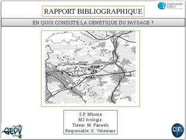

MASTER 2: Gestion Ecologie et Evolution de la Biodiversité (U.S.T. Lille)
Technicien GEPV UST Lille 1:
Echantillonnage, manipulation en biologie molécukaire et utilisation de divers logiciels courants en génétique des populations.
Janvier à Juin 2013
Grâce à l'analyse a posteriori de la structure génétique des populations
J'ai réussi à illustrer et à mettre en évidence pour la première fois la signature de multiple introduction de l'espèce, A. halleri, dans la Région Hauts-de-France.

Septembre à décembre 2012
Biodiversité option: Recherche Scientifique (U.S.T. Lille 1)
Les théories les plus récentes et leurs limites

Avril à mai 2012
Technicien dans la "Station Marine de Wimereux" UST Lille 1:
J'ai mis en évidence la correlation entre les variations de taux d'antioxidant avec le niveau bathymetrique
Ainsi que l'impact de certains antioxidants sur la biosynthèse au sein des cellules
2012: Master 1 Biodiversité, Ecologie (U.S.T. Lille 1)

2011: Licence "Sciences de la Vie et de la Terre" U.S.T. Lille 1

Hiver 2011 (2 mois)
Laboratoire d'Ingenerie en Ecotoxicologie et Ecologie Numérique USTL's.
J'ai participé à l'échantillonnage d'insectes de la famille des Carabidae et effectué la détermination en laboratoire
Avril 2005 à janvier 2006
Gestion de l'espace culture Emmaüs Tourcoing
informatique
Développement Web: HTML5, CSS3, JavaScript and PHP
Certificat IT et Internet: C2i niveau 1 USTL1
juin 2016 -: Développement Web: HTMLs, CSS3, JavaScript and PHP

2011: Certificat IT et Internet: C2i niveau 1 USTL1
Langues étrangères
Anglais - Grecque - Kongo
Français
Latin-Philosophie collège Albert Ier

"Tout ce qui dégrade la culture raccourcit les chemins qui mènent à la servitude"
Grec
Université Aristote de Thessalonique

"À son meilleur, l'homme est le plus noble de tous les animaux;
sans la loi et la justice, il est le pire"
Anglais
Niveau 3: analyses and compréhension - Certificat OMEP Wattrelos
"Have more than you show, speak less then you know"
Kongo
Culture et Tradition locale

"Tout est une question de vibrations"